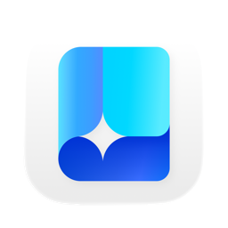

下载 MDNote

MDNote for Mac
v0.2 · macOS 15 或更新版本
首次打开会提示「无法验证开发者」，点这里看怎么办
安装包目前没有做苹果公证，首次打开时系统会拦一下。不影响使用，按这四步走：
- 打开 dmg，把 MDNote 拖进「应用程序」
- 双击打开，出现提示后点「完成」
- 打开「系统设置 → 隐私与安全性」，下滑找到被拦截的 MDNote，点「仍要打开」
- 再次确认「打开」
之后每次打开都正常，不用再走这套。想核对安装包完整性，可以下载同目录的 .sha256 文件后执行 shasum -a 256 -c
常见问题
已有的笔记，需要搬进 MDNote 吗？
不需要。原地索引，仍可用其他编辑器打开，改动自动更新
它和 Obsidian 可以一起用吗？
可以。支持本机文库、双链与嵌入，部分插件语法除外
不联网，也能正常使用吗？
基础功能可离线。云端 AI、网络图片和系统模型下载需要联网
AI 会读取我的全部笔记吗？
默认不读取。开启后按功能发送笔记片段或录音文字；外部客户端可读取授权范围。详见隐私政策
支持哪些 Mac？
笔记需 macOS 15+，录音需 macOS 26+；本机总结取决于设备与地区。Apple 芯片与 Intel 芯片均可
需要付费吗？
不需要，目前公益免费